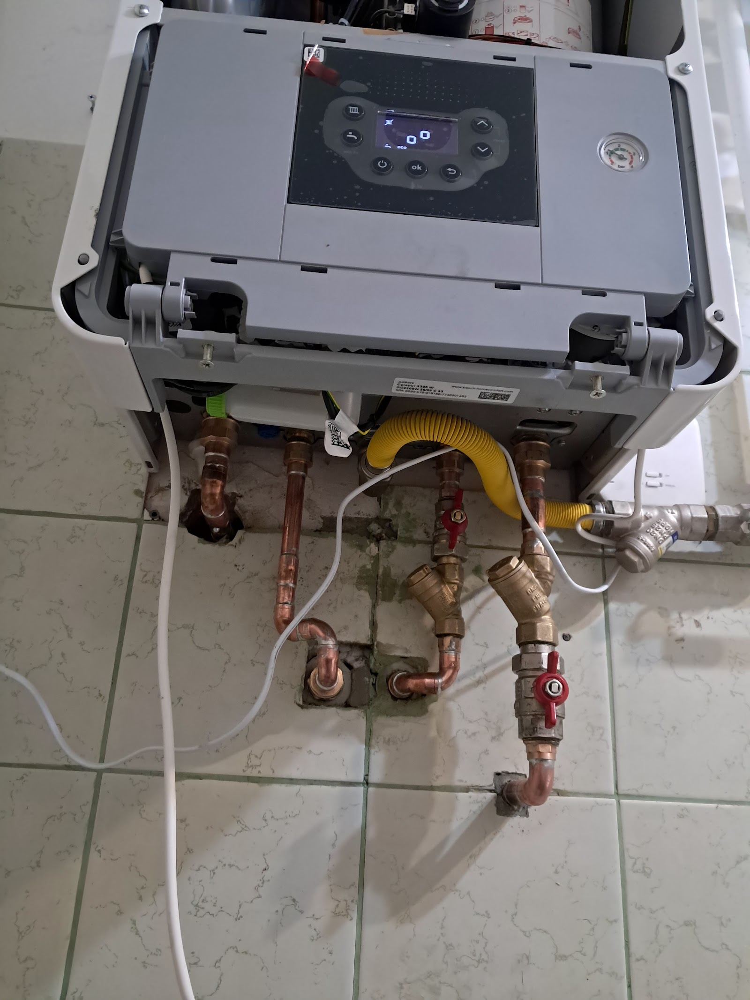
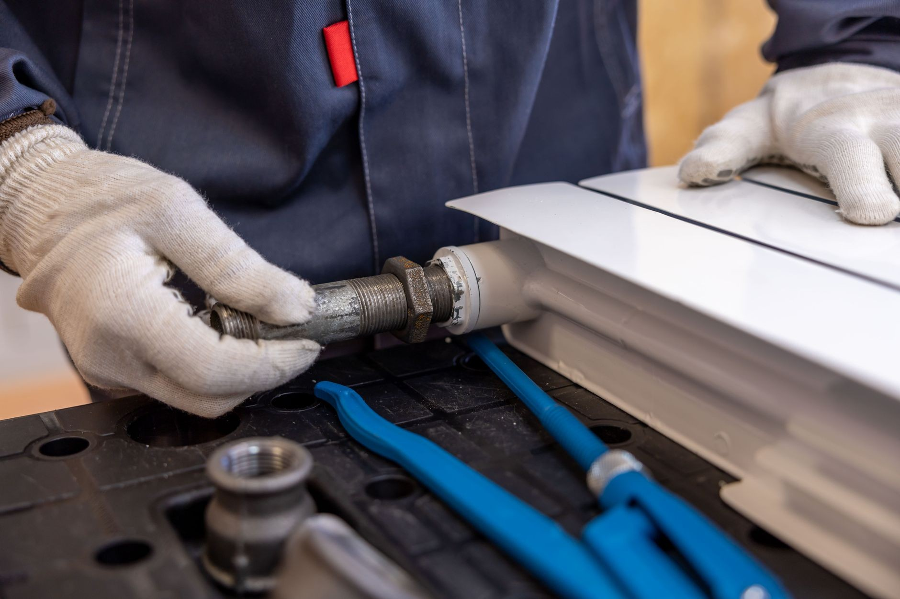
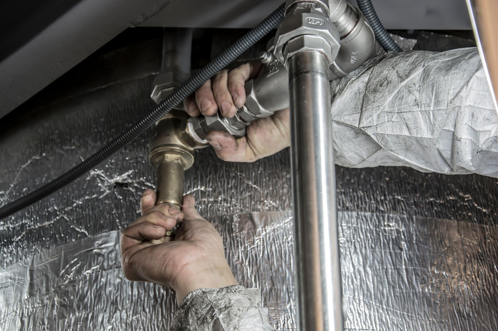
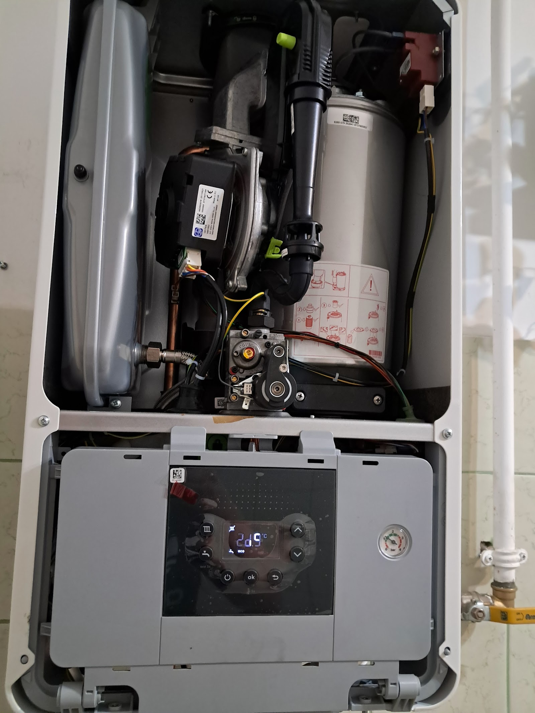
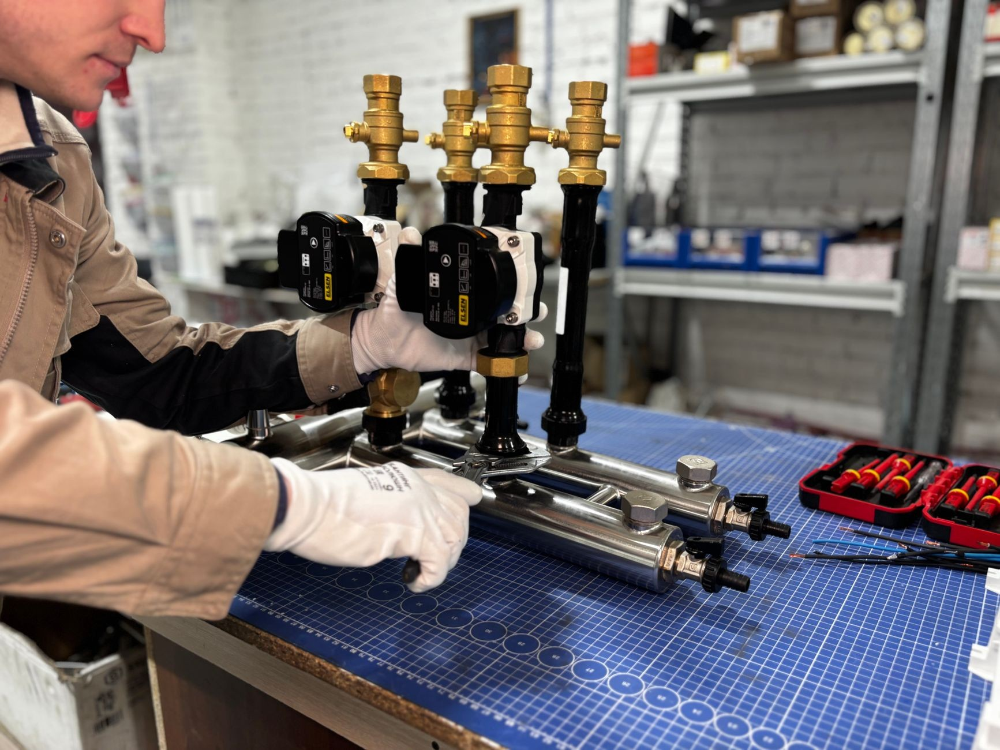
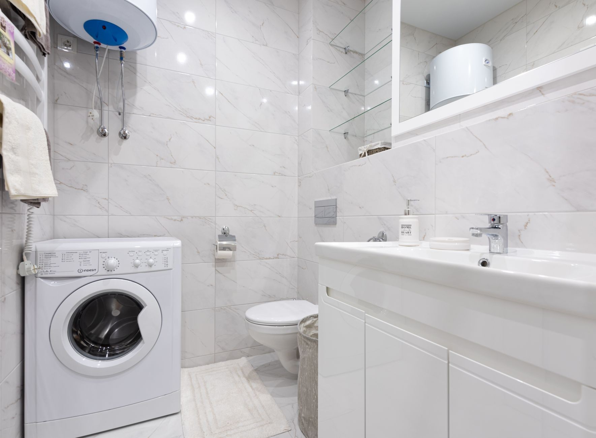
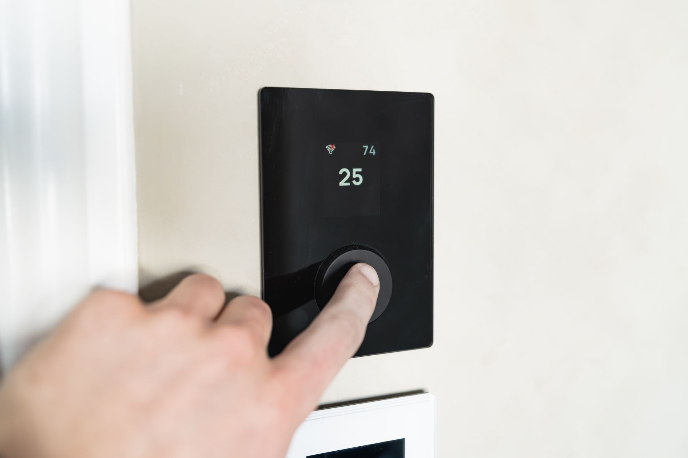

Woda leje się tam, gdzie nie powinna? Zakręć główny zawór i dzwoń. Przyjeżdżam z narzędziami i częściami na większość przypadków, znajduję przyczynę i naprawiam to, co faktycznie puściło - nie zaklejam objawów. Zanim wyjdę, sprawdzam, czy jest sucho. Dopiero wtedy koniec roboty.

Woda schodzi coraz wolniej albo cofa się w odpływie? Samo się nie odetka, a im dłużej czekasz, tym bliżej zalania. Udrażniam odpływy, piony i kanalizację - sprężyną albo ciśnieniem, zależnie od tego, co siedzi w rurze. Po robocie mówię, skąd wziął się zator i jak nie hodować następnego.

Stary kocioł bierze coraz więcej gazu albo wysiada w największy mróz? Wymieniam kotły na kondensacyjne i podłączam je tak, żeby odbiór przeszedł bez poprawek. Doradzę model, który ma sens przy Twoim metrażu - a nie ten, na którym najwięcej się zarabia.

Nowa instalacja to robota, której po skończeniu nie widać - i właśnie dlatego musi być zrobiona porządnie, zanim zniknie w ścianie. Ciśnieniową próbę szczelności robię przy Tobie, z manometrem, nie „na oko”. Poprawki po zalaniu zawsze kosztują więcej niż porządne podejścia.

Remont łazienki stanął na ostatniej prostej? Robię biały montaż od baterii po pralkę i sprawdzam każde połączenie, zanim zamknę za sobą drzwi. Stare wyposażenie zabieram od razu, chyba że chcesz je zatrzymać. Termin ustawiam tak, żeby nie blokować innych ekip.

Grzejniki grzeją nierówno, bulgoczą albo nie łapią temperatury? Płuczę i odpowietrzam instalacje, wymieniam grzejniki i głowice, ustawiam ogrzewanie tak, żeby grzało równo w całym domu, a nie głównie przy kotle. Różnicę czuć pierwszej zimy - i w pokojach, i na rachunku.
Prosty, przewidywalny proces. Bez niespodzianek i bez naciągania.
Opisujesz, co się dzieje. Od razu mówię, czy to pilne, czy może poczekać - i czy to w ogóle robota dla mnie.
Zanim wyjmę narzędzia, wiesz, ile zapłacisz. Jak w trakcie wyjdzie coś nowego, najpierw rozmawiamy - potem robię.
Robię swoje i nie znikam w połowie na inną budowę. Zaczęte kończę.
Na wykonaną robotę dostajesz gwarancję i jasny rachunek - jak coś nie gra, wracam i poprawiam.
Napisz, co chcesz zrobić - odpowiem z propozycją i wyceną.